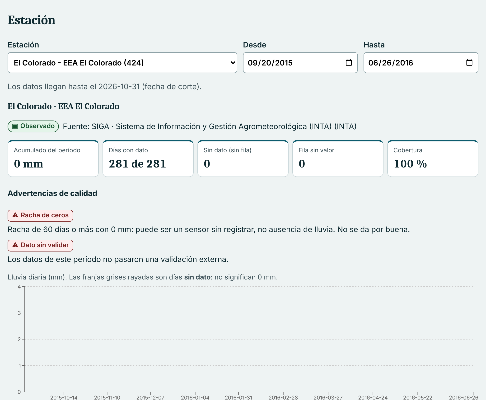
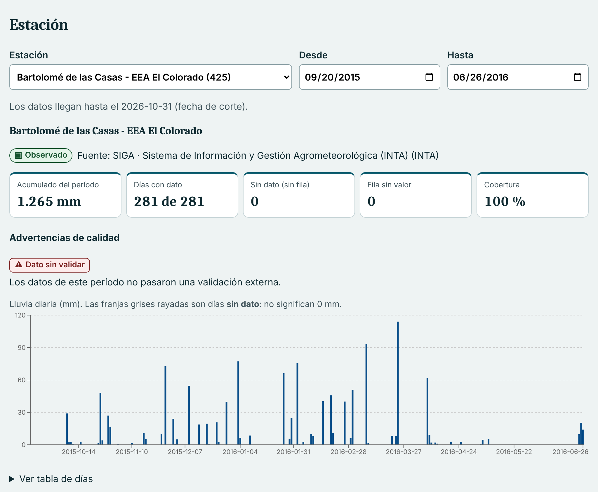

no es 0 mm
Ilustración, no son datos. Las franjas rayadas son días sin dato: se muestran como «sin dato», nunca como cero.
El problema
La lluvia está repartida entre redes con horarios de corte distintos, huecos de datos y estaciones que dejan de informar sin avisar.
La solución
Consulta por estación, zona y período en mapa, maqueta 3D, comparador y parte pluvial, con fuente, categoría y advertencias a la vista.


Fuentes y categorías
Series reales de 3 estaciones del SIGA/INTA (7.648 días) y normal mensual 1991-2020 del SMN como referencia. Observado, referencia y estimado nunca se suman. Corte de datos: 31/10/2026.
Límites
Prototipo con 3 estaciones reales; otras redes sin verificar. Sin relieve del terreno todavía. Seis advertencias de comparabilidad, descriptivas: no son alertas de riesgo.